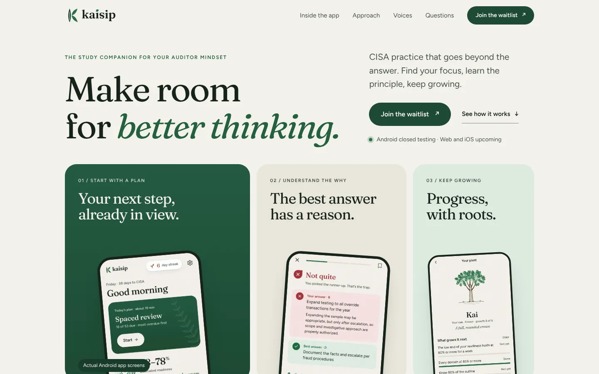
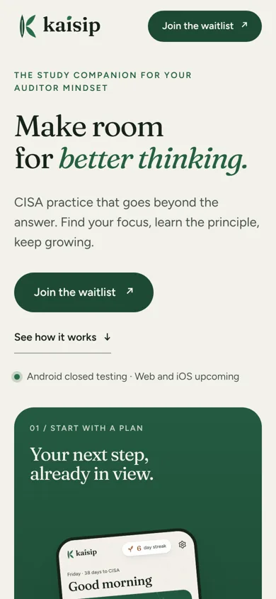
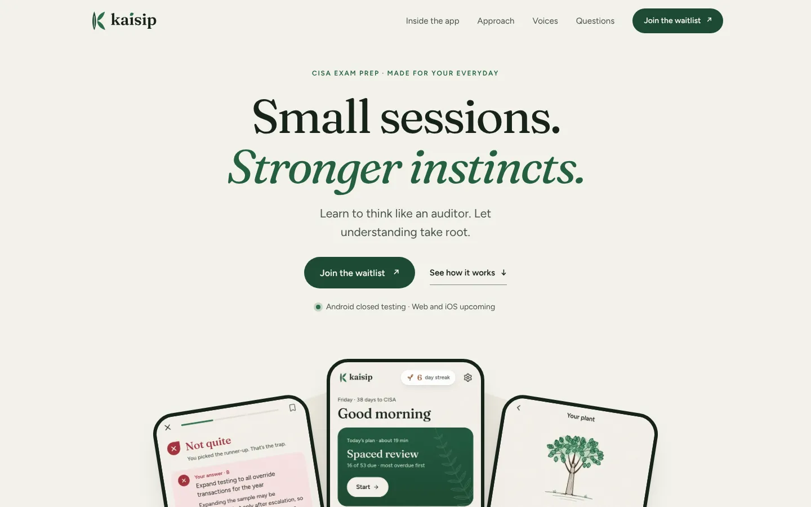
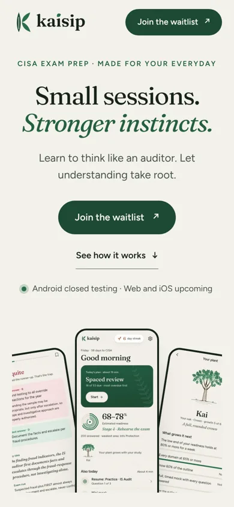
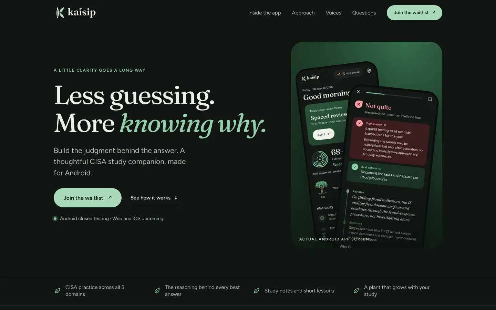
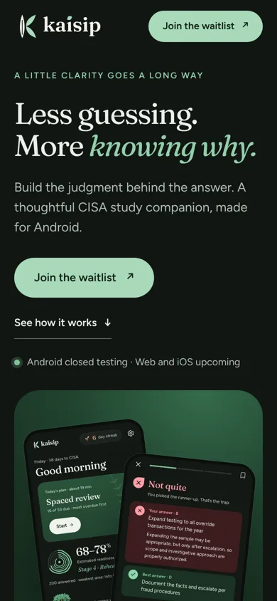

KaiSip · Round four · Unpublished
Three revised directions, one to pick.
Each page is a working mockup: real Android screens, a scroll-through study session, and the Grove Voices feedback row. The waitlist is still a mockup. It sends and saves nothing.


Fieldwork
Headline on top, then three panels that show the product straight away. The clearest of the three, and the strongest on phones.
- Light Grove paper
- Three real screens in the first view
- My recommendation


Canopy
A big centered headline and a fan of three phones that opens as the page loads. The most spacious and showy.
- Light Grove paper
- Words first, product just below
- Best if you want the brand line to lead


Night Study
The Grove dark palette with the app’s own dark-mode screens on a forest stage. The moodiest and most distinctive.
- Dark Grove, now with real dark screenshots
- Two screens in the first view
- Best if most visitors study at night
What changed from round three
- A scroll-through study session: five real screens cross-fade in one phone as you scroll.
- A feature grid built from close-ups of real screens.
- Stronger, still calm motion: headline reveal, panel and phone entrances, scroll reveals, button and card feedback.
- One stylesheet and one script for all three, in place of three stacked layers.
- Right-sized images, about a quarter of the old file size.
What stayed protected
- Official logo, Grove colors, Fraunces and Figtree.
- Only real app screens and verified features.
- Feedback row: pause, read all, and stillness for reduced motion.
- Everything readable with JavaScript off.
- Nothing here is in the website build.
Before any public launch
- Ken L.’s quote is in. Please confirm he agreed to be quoted by name.
- The five sample quotes must be replaced or removed.
- The waitlist needs a destination you approve.
- Android, web and iOS status needs a fresh check.
Design review only. Not indexed, not linked from kaisip.com, and not deployed.